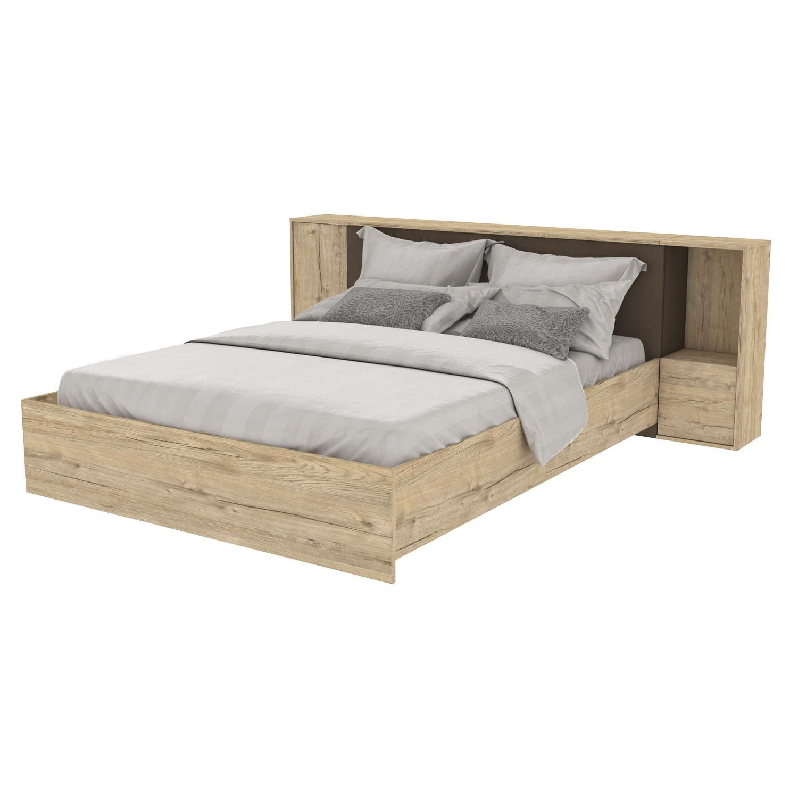

Pat dormitor cu sertare online la un pret bun | Mobilier1.ro
2020.09.19 22:20
Transport gratuit în sigurantă* FĂRĂ AVANS. PLATA LA LIVRARE 365 DE ZILE GARANȚIE DE RETURNARE A BANILOR Sau inceara acestea: Cos de cumpărături Cosul este gol Vizualizati cosul Procesare Contul meu Comenzi Lista de produse favorite Statusul comenzii Autentificare Inregistrati-va 0739 844 766 Contact Informații Despre Mobilier1.ro Plată Livrare Returnări și rambursări Noutăți Statusul comenzii Întrebări frecvente Contact Meniu TOT MOBILIERUL Tot mobilierul_1 Mobila pentru sufragerie Canapele Canapele pe colt Canapele în formă de U Seturi de bucătărie Paturi Saltele Dulapuri Corpuri cu sertare Seturi de masă Mese Scaune Tot mobilierul_2 Birouri Scaune de birou Seturi de hol Comode pentru pantofi Rafturi Rafturi de perete Comode TV Măsuțe Fotolii Seturi mobilier tapițat Tabureți tapițați Tot mobilierul_3 Pătuțuri Paturi supraetajate Masă pentru înfășat Vitrine Cabinete Noptiere Comode cu oglindă Baruri Scaune de bar Scaun Colțare de bucătărie Scaune balansoar Tot mobilierul_4 Leagăne exterior Șezlonguri Mobilier de baie Bănci Cuiere Consolă Cufere Casetieră Cutii de depozitare Somiera pat Stiluri de mobilier Scandinav Industrial Modern Clasic Provence BUCĂTĂRIE Mobila de bucatarie Seturi de bucătărie Seturi de masă Colțare de bucătărie Mese Scaune Vitrine Dulăpioare Baruri Scaune bar Colecții bucătărie Colectia bucătărie ABB ECON Colectia bucătărie BGB ECON PLUS Colectia bucătărie ABP WHITE Colectia bucătărie BZT OPTIMA Colectia bucătărie BGA MODERN Colectia bucătărie BABH CLASSIC Colectia bucătărie ABA MOBILIER TAPIȚAT Canapele pe colt Canapele Canapele în formă de U Canapele extensibile Fotolii Reclinere Tabureți tapițați Seturi mobilier tapițat Divan CAMERA DE ZI Mobilier camera de zi Seturi de mobilă living Mobila pentru sufragerie Corpuri cu sertare Măsuțe Mese Comode TV Dulapuri Rafturi Seturi de masă Vitrine Dulăpioare Scaune Cabinete Mobilier tapițat Canapele pe colt Canapele Canapele în formă de U Canapele extensibile Fotolii Reclinere Tabureți tapițați Seturi mobilier tapițat Canapea DORMITOR Paturi Seturi de dormitor Dulapuri Сorpuri cu sertare Saltele Noptiere Cabinete Rafturi Comode TV Cufere Măsuțe CAMERA COPIILOR Set camera copiilor Paturi Pătuțuri Paturi suprapuse Seturi bibliotecă și birou Dulapuri Birouri Сorpuri cu sertare Rafturi Scaune Noptiere Casetieră Cabinete Comode pentru televizor HOL Seturi de hol Comode pentru pantofi Dulapuri Cuiere Сorpuri cu sertare Rafturi Cabinete MOBILĂ DE BIROU Birouri Scaune de birou Seturi de birou Rafturi Dulapuri Сorpuri cu sertare Cabinete Casetieră Măsuțe NOUTĂȚI PROMOȚII Pagina start / Mobilier dormitor
Pat dormitor cu sertare
PrețLei – Lei
480 Lei 6140 Lei Lungimemm – mm
1936 mm 2250 mm Lățimemm – mm
830 mm 2000 mm Înălțimemm – mm
500 mm 1720 mm Pentru saltele cu dimensiunea 800 x 1900 mm 800 x 2000 mm 900 x 1900 mm 900 x 2000 mm 1000 x 2000 mm 1200 x 2000 mm 1400 x 2000 mm 1600 x 2000 mm 1800 x 2000 mm 2000 x 2000 mmNici un produs gasit care sa corespunda cu criterile cautarii
Tipul de pat Single Dublu Single cu pull-out ContinentalNici un produs gasit care sa corespunda cu criterile cautarii
Saltea Da NuNici un produs gasit care sa corespunda cu criterile cautarii
Somiera pat Da NuNici un produs gasit care sa corespunda cu criterile cautarii
Termenul de livrare Până la 15 zile lucrătoare Peste 15 zile lucrătoareNici un produs gasit care sa corespunda cu criterile cautarii
Resetati Livrare gratuită și în siguranțăLivrarea este gratuită în toată România pentru comenzi de peste 1,000 lei, livrăm cu propriul nostru serviciu de transport pentru a asigura ajungerea in siguranță a produselor comandate.
Plata la livrareFără avans sau plată înainte! Plătiți cash sau cu card bancar la livrare. Plata în rate disponibilă.
Retur 365 de zileDacă nu sunteți 100% mulțumit de produs puteți returna în decurs de 365 de zile și primiți integral banii înapoi.
100 000 piese diferiteScopul nostru este ca sortimentele noastre să fie cele dorite din România.
Cel mai bun preț garantatLucrăm direct cu producătorii și încercăm să oferim cele mai bune prețuri, dacă găsiți produsul mai ieftin vom egala prețul și vom livra gratuit.
1 comandă = 1 copacPentru fiecare comandă plasată și livrată noi vom planta un copac. Cu ajutorul tău vom planta milioane de copaci!
Recomandări Ultimele noutăți Cel mai mic preț Cel mai mare preț 48 produse 12 produse 24 produse 96 produse Oferte si noutăți Prin abonarea la newsletter, suntețide acord cu politica de confidențialitate
Informații
Despre Mobilier1.ro Politica de confidențialitate In English Testiomoniale 1 comandă = 1 copac ContactPentru clienți
Livrare Plată Statusul comenzii Returnări și rambursări Reguli de achizitie Întrebări frecventeContact
Mobilier1 Concept SRL CIF: 39413592 TVA: RO39413592 IBAN RO30RNCB0090159344320001 info@mobilier1.ro 0739 844 766 Luni - Vineri de la 9 la 17 Sâmbătă de la 10 la 15Metode de plata
© 2020 Mobilier1.ro Mebeli.bg Butor1.hu Furniture1.eu
Cookie-urile sunt folosite pe acest site pentru a oferi cea mai buna experienta pentruutilizator. Daca veti continua, vom presupune ca sunteti de acord sa primiti cookie-uri de pe acest site.
SUNT DE ACORD